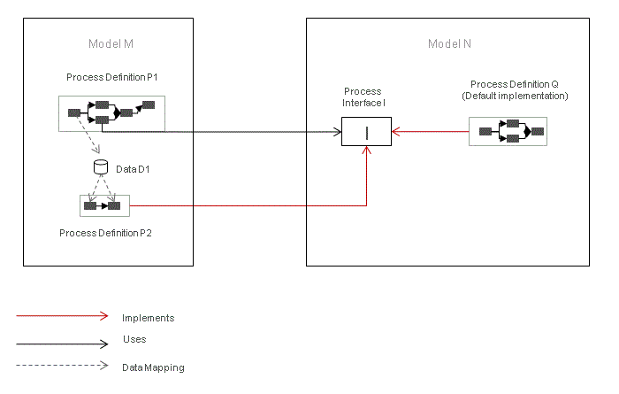

A provider model defines some of its elements like data types, process definitions or applications as public so that they can be used by other models.
To specify the data flow between models, a Process Interface using input and output parameters can be defined in a provider model. To make a process definition in the provider model usable by other models, it can be declared as public. In this process definition, you provide a Process Interface. This Process Interface defines the process to be invoked and the parameter mappings for the call from other models, which use the provider model. Note that it is the Process Interface that will be visible to external consumer models, not the full process definition.
For detailed information on how to provide a Process Interface for a process definition in the modeler, please refer to the Provides Process Interface section of the chapter Working with Process Interface in the Modeling Guide.
Applications and Types elements can be marked whether they should be public or private, whereby:
Note that Process Interfaces are always public.
Models, which use elements from a provider model, are called consumer models. A consumer model contains a list of model IDs and associated version IDs, one for each provider it uses. A provider model on the other hand is unaware of any consumer models as it contains no record of its consumers.
There can be many consumers for a given provider model. Also, a model may be consumer to multiple providers at the same time. Note that none of its providers may have the same model ID. Per given model ID there can be at most one unique provider.
Process Definitions can be marked as implementing a Process Interface. Currently only one Process Interface can be defined per process definition. The process definition that a Process Interface is defined for is called the Default Implementation of that Process Interface.
A process definition of a defined consumer model can offer an alternative implementation of a process interface defined by one of its provider models. Such an implementation stores the fully qualified ID (model ID + process ID) of the process interface it implements.
Even though a consumer might define at most one Implementation per Process Interface, a consumer model can contain multiple Implementation process definitions. Further, the consumer model may implement an arbitrary set of Process Interfaces from any of its providers.
The process definition defining a Process Interface is considered the Default Implementation of that interface.
For detailed information on how to implement a process interface for a process definition in the modeler, please refer to the Implements Process Interface section of the chapter Working with Process Interface in the Modeling Guide.
The execution type semantics for sub-process instances invoking process interface is the same as for sub-process activities in the same model. However, the identity relation for data does consider the fully qualified data ID and hence two data are only identical if they have identical IDs and are defined in the same model. Therefore the difference between execution type synchronous shared data and synchronous separate data will only be observable in cases, where execution returns to the calling model.
Create two models named M and N. Model N is provider of a process interface I. Further assume that there are two associations between Model M and N.
Going further assume that:

Figure: Sub-process Invoking Process Interface
In Model M and N, when process definition P1 is started, invocation of interface I will result in starting of process definition P2. As both process definitions P1 and P2 are now modifying the same data D1 (defined in the same model M), the execution type of the sub-process activity invoking I is relevant. Note that the consumer process and implementer process are defined in the same model.
The following scenarios are applicable if data is referenced from the provider model. Now let's see how each execution type, if defined, affects the workflow.
If the sub-process activity is using execution type Synchronous Shared, process definitions P1 and P2 will operate on the same data instances, although P2 was started via a process interface defined in a different model. This means that all modifications done in data mappings from activities in P1 (or any other process definition in M) will be visible to activities in P2 and vice versa. For example, if D1 would be an integer initialized to 42 in the first activity of P1, then any data mapping reading this value from an activity in P2 would retrieve the value 42. Likewise if D1 would be modified by data mappings in P2, this modification would also be visible for data mappings to/from activities of P1 or any other access to D1 in the scope of M that might be done after P2 is completed and execution returns to P1. The same applies to longer invocation chains over multiple models as long as all invoking sub-process activities are using execution type Synchronous Shared.
If the sub-process activity is using execution type Synchronous Separate or Asynchronous Separate, all invocations from P1 and P2 will be working on separate data scopes, exactly as in the case of sub-process activities directly invoking process definitions in the same model. For example, if D1 would be an integer initialized to 42 in the first activity of P1, then any data mapping reading this value from an activity in P2 would consider D1 as uninitialized and retrieve the default integer value 0. As in the case of sub-process activities invoking process definitions in the same model directly, the boolean attribute Copy all Data will be supported with the same semantics. (In this example, it would mean that P2 would be able to retrieve the values set in P1, but modifications to the data done in P2 would not be visible to follow-up activities in P1 that are executed after P2 is completed.)
Data mappings on the out parameters of the process interface will not be performed if the execution mode is Asynchronous Separate. Because at the time when the mappings are performed, the subprocess is just starting in parallel to the starting activity.
Deleting a model is not allowed if there are running process instances that are using this model, either via model element references or as a primary implementation.